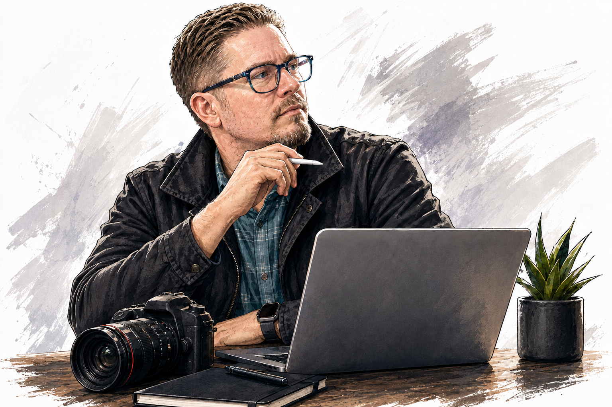
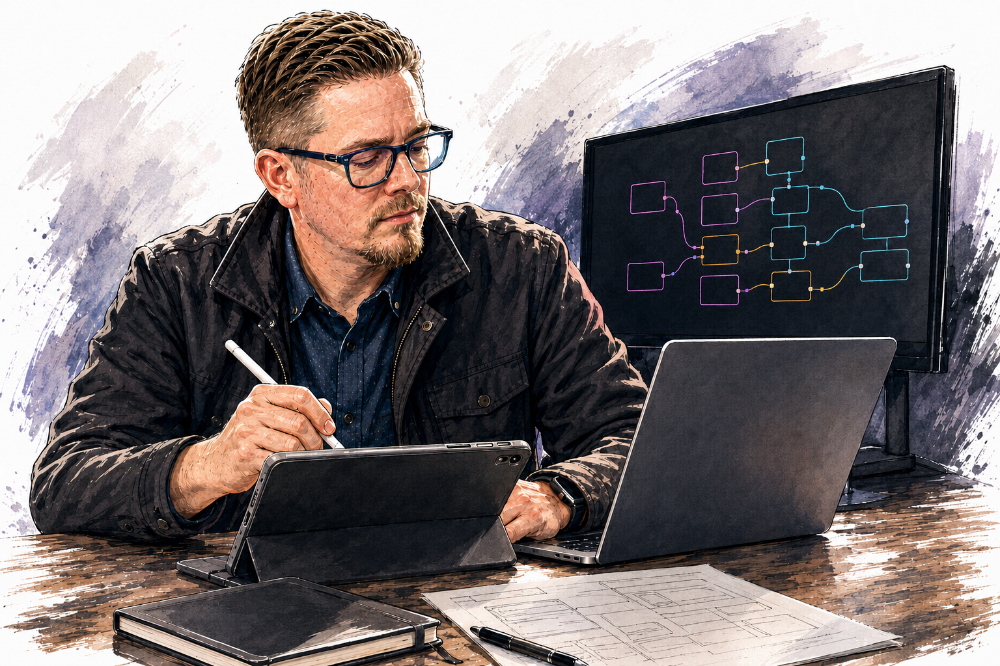
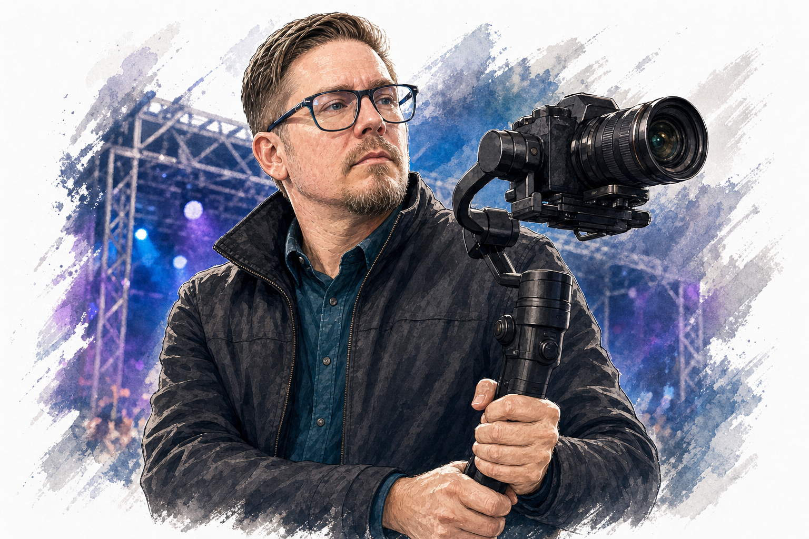
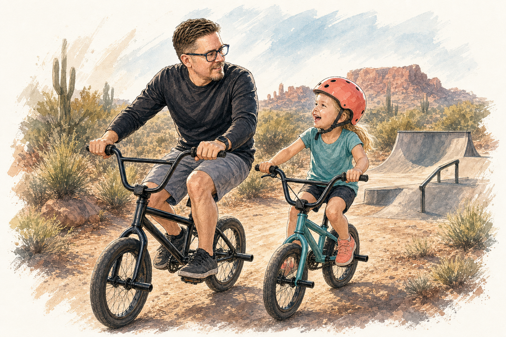

Now
AI Lead
Leading AI adoption, team enablement, workflow design, model evaluation, automation experiments, and local-agent pilots at Mi-One Brands.
AI lead · creative systems builder
Turning new technology into useful workflows, memorable experiences, and things people can actually use.
Twenty-plus years across photography, design, production, entrepreneurship, event marketing, and creative operations—now focused on practical AI adoption and building the systems around it.

Now
Leading AI adoption, team enablement, workflow design, model evaluation, automation experiments, and local-agent pilots at Mi-One Brands.
Alongside that
Connecting brand strategy, multimedia production, live events, sales enablement, print, and vendor execution across Mi-Pod, Vaping.com, and related brands.
Foundation
Commercial photographer, designer, fabricator, founder, brand specialist, and hands-on problem solver before AI became the newest tool in the shop.
01 · Experience
Leading practical AI adoption while directing multimedia, events, sales-enablement materials, production systems, and cross-functional creative execution.
Owned photography, video, graphics, social content, and event presence for a performance-motorcycle brand.
Built a motorcycle business from the ground up across fabrication, brand, sales, operations, vendors, and customer experience.
Commercial photography and production from preproduction and lighting through capture, retouching, design, and final delivery.

02 · Creative systems
The interesting part of AI is not the demo. It is what happens when a real team can use it on Monday morning.
I translate fast-moving model capabilities into practical workflows, training, governance, creative acceleration, and lightweight tools. The goal is not “more AI.” The goal is better work with less friction.

03 · Live experiences
A live activation has to look right, feel right, arrive on time, fit the space, satisfy compliance, and work when the doors open.
That is where creative direction and operations become the same job: concept, visual system, production, staging, vendors, logistics, installation, content capture, and the inevitable last-minute fix.

04 · Made to move
Motorcycles, BMX, photography, cooking, product ideas, and Arizona roads keep the work connected to motion, materials, and people.
The mediums change, but the instinct does not: understand how something works, improve it, give it a point of view, then put it into the world.